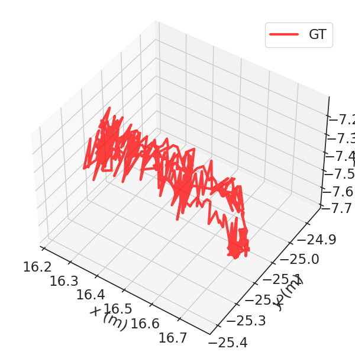
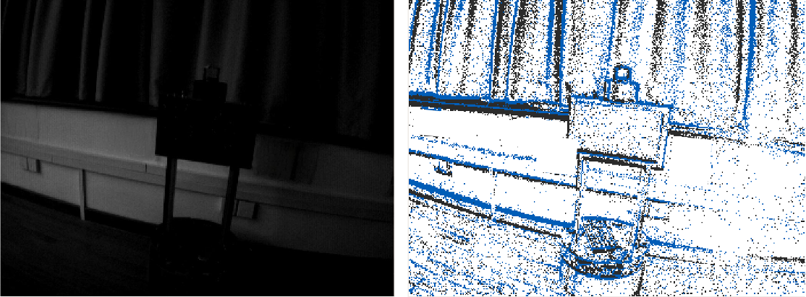
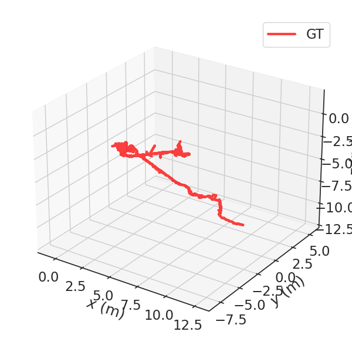

Overview of Scenes and Trajectories
| No. | Catergory | Sequence | Scene Illustration | Trajectory |
|---|---|---|---|---|
| 1 | Easy | monitor | ||
| 2 | Easy | printer |  | |
| 3 | Easy | robot | ||
| 4 | Easy | whiteboard | ||
| 5~6 | Easy | low_cabinet1, low_cabinet2 | ||
| 7~9 | Easy | robotic_arm1, robotic_arm2, robotic_arm3 | ||
| 10 | Medium | chairs_dark | ||
| 11 | Medium | low_cabinet_dark | ||
| 12~14 | Medium | robot_dark1, robot_dark2, robot_dark3 |  |  |
| 15 | Medium | 316_long | ||
| 16 | Medium | 318_long | ||
| 17 | Medium | corridor_light | ||
| 18 | Hard | chairs_darker | ||
| 19 | Hard | low_cabinet_darker | ||
| 20 | Hard | robot_darker | ||
| 21~23 | Hard | 316_complex, 316_fast1, 316_fast2 | ||
| 24~26 | Hard | 318_fast, 318_forward, 318_complex | ||
| 27~28 | Hard | cross_room1, cross_room2 | ||
| 29~30 | Hard | corridor_fast, corridor_hdr | ||
| 31 | Hard | cross_floor |  | |
| 32 | Hard | corridor_dynamic | ||
| 33 | Hard | corner_dynamic | ||
| 34~35 | Hard | stairs_dynamic1, stairs_dynamic2 | ||
| 36~37 | Hard | stairs_hdr1, stairs_hdr2 |